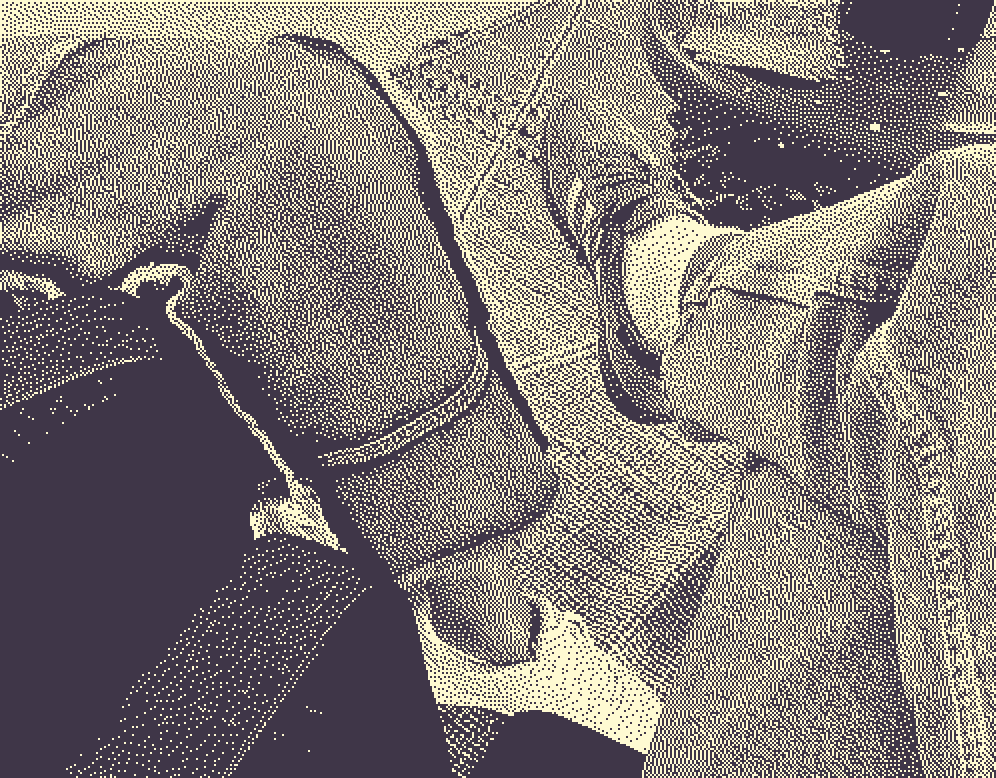

← Failure, Romance?

My suspicion is that an intimate relationship requires immense aggregates of (spiritual) energy and that you are either expending those energies or you’re not. I also suspect that there is profound relief for all of us in this kind of dynamic, but laborious task. Am I saying something that is obvious? Failing in an intimate relationship can be dreadful, frightening. It can produce one of the worst feeling-states (sorrow).
But what does it mean to fail out of one, hitting the ground awkwardly? I know that feeling so well. I must have had it with my parents. It’s worse in the sense that it is a bitterer dilemma, but it is sometimes avoidable for adults.
In trying to pinpoint what all of this is akin to, I recollected that there is occasionally a split second, when we trip or lose our balance, wherein we can make a quick decision about how to land so as to avoid being very badly injured. The kinds of choices are between injured and badly injured or hurt and badly hurt, and as a result those moments are typically ones of the most acute terror and self-doubt. My point is that misfortunes and dilemmas are inevitable, and though we can’t really be blamed for not saving ourselves, the moments when we do, despite the nauseating certainty of going down, are categorically our best.
Risk, doubt, terror… It feels somewhat illegal to be advocating for more of these mysteries in the realm of relationship, but that is perhaps because we have mixed up fantasy and ideology. More on that later!
I am realizing that what I want to write to you about is failure. I think that failure and romance are two sides of the same coin. I often say that. I mean, I often say that things are two sides of the same coin. I find it to be a satisfactory euphemism for being two-faced and deeply true in the sense that everything in life appears to be a toss-up. Consider that it is very romantic to fail - that all heroes do it, and that most stories are about that. Every hero, if you care about this, is two-faced.
Being two-faced - that is, tolerating failure in ourselves and in others - is what love is, I think. Is it also what love teaches? There of course is a political facet to this (politics as the distribution of our energy, or the ability to do work? politics as the management of collective desire?), as there are many forms of work that would be delightful to do if everyone wasn’t spread so thin. I am asking myself whether it’s the fear of precariousness (precarity) that is causing us to forfeit our capacity to bring structure to the various realms of our lives? Is that what Butler meant? It can’t be!
There is an idea - an image I have - of individuals wandering around gray and arid hells - emotional no-man’s-lands - searching for true love. I wandered there. Love comes when you’re on the ground, fighting for your last breath. Is that it? I just believe that life is supposed to be richer than that.
It’s less that there’s no getting out and more that there’s no getting in. Life is full of doubt, which is exhausting. But it is as exhausting to trust as it is to doubt. Practicing neither is never a choice - it’s always only good (mis)fortune. Doubt and trust are also two sides of the same coin. The value of that coin in particular is intimacy. I believe that it’s not bad to be two-faced. We cannot know ourselves. Love invites us to drop the burden of consistency.
To be two-faced, finally, is to move forward without knowing. Without knowing what? Anything - without knowing what’s ahead. To rest your gaze, which is a double-edged sword, both on the past and on the future. To not choose between them. To be present. To be two-faced is good because it is the only way to negotiate a threshold safely. And, since we can’t know the future, each passing moment is a threshold - or could be.
It is no different to doubt than to trust. The practice of doubt and trust requires deep focus, like tiptoeing, which it is just like. It is probably true for many of us that our capacity to focus is being threatened. But just because it’s being threatened does not mean that we have to fold. We are choosing to fold. I consider folding to be an action that you take when you don’t necessarily have to take it. The only thing that we necessarily have to do in life is to doubt - in other words, to falter, to fail.
26.5.25